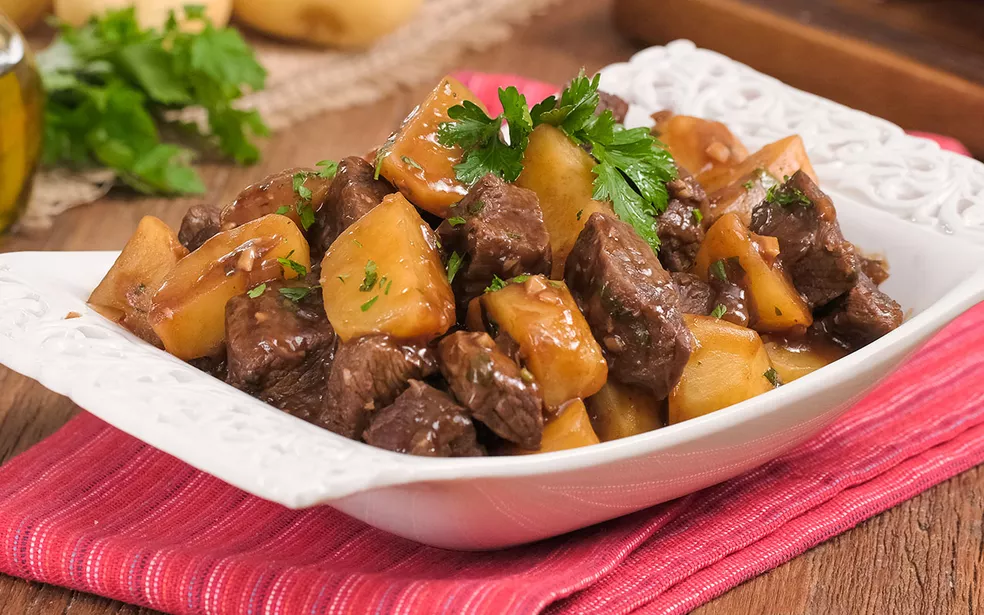

Carne de panela

A receita de carne de panela que deu certo para mim!
Nessa receita vou te ensinar como fazer uma carne de panela sem erros
Ingredientes
- 500g de coxão mole cortado em bifes
- 1 cebola ralada
- 1 dente de alho amassado
- 1/2 xícara de chá de óleo
- sal e pimenta-do-reino a gosto
- 1/2 colher de sopa de tempero dm pó sabor umami (opicional)
- 1 colher de sopa de salsinha picada
- 500ml de água quente
- 1/2 lata de massa de tomate
- 1 pimentão verde picado
- 1 tomate sem sementes picado
- 1 cenoura pequena picada
- orégano a gosto
Modo de preparo
- Em uma panela de pressão coloque o óleo, junte a cebola e o alho e refogue bem
- Acrescente a carne e frite por 5 minutos mexendo bem, depois coloque o tmepero em pó sabor umami (opicional), tomate, pimentão, massa de tomate, cenoura e a seguir acrescente a água e orégano
- Deixe cozinhar por 30 minutos contando do início da fervura. Assim que a carne estiver cozida retire do fogo, misture a salsinha e sirva em seguida com arroz branco